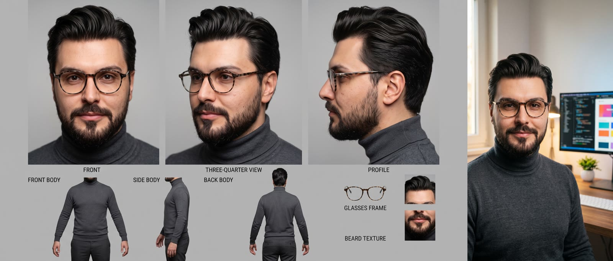
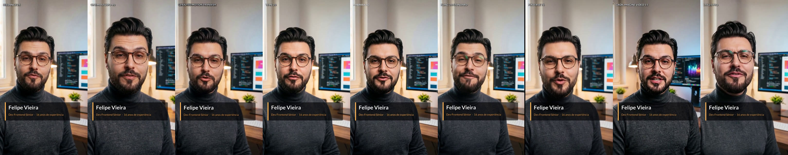
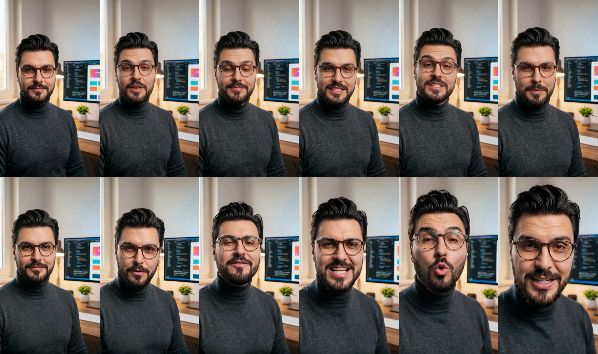

Peguei uma foto minha, uma frase de 11 palavras em português e passei pelos mesmos filtros em nove modelos de vídeo com IA. Cinco segundos, na vertical, US$ 9,95 no total. Um dos clipes custou US$ 0,26 e outro custou US$ 2,31. Os dois dizem a mesma coisa. Só o rosto, a sala e o tempo de espera mudam.
Eu queria saber onde o preço compra qualidade de verdade e onde ele só compra espera. A resposta ficou mais interessante do que a tabela.
Minha conclusão curta: Seedance 2.5 e Cinema Studio seguraram melhor meu rosto e a sala. O Wan 3.0 chegou perto por US$ 0,50 e é o que eu usaria para iterar. O LTX 2.5 Pro foi o pior da rodada e não por falta de preço.
O primeiro erro foi mandar a folha de identidade
Tenho uma folha de identidade minha, gerada por IA. Ela traz retrato de frente, três quartos, perfil, corpo e detalhes dos óculos e da barba, tudo com rótulos. Serve para fixar o rosto. Como primeiro quadro de um vídeo, não serve: o modelo recebe uma imagem cheia de painéis e legendas e precisa adivinhar o que animar.
Gerei no fal um quadro limpo com o Nano Banana 2, usando a folha como única autoridade do rosto. Foram duas tentativas, US$ 0,24 no total. A primeira saiu da cintura para cima e deixou meu rosto pequeno. A segunda saiu do peito para cima, com a cabeça ocupando cerca de 70% da largura. Fiquei com ela porque rosto grande dá mais pixels para a boca, e é na boca que a sincronia se decide. Não gerei vídeo com a primeira, então essa escolha é aposta, não medição.

A frase, o prompt e as regras do teste
A frase foi: “Eu sou Felipe Vieira, dev frontend sênior, com 16 anos de experiência.” São 11 palavras e umas 29 sílabas, o que cabe em 5 segundos sem atropelo. O prompt segue uma estrutura enxuta, em inglês, com a fala literal em português e a instrução de que ele já começa olhando para a lente e nunca desvia o olhar.
Ver o prompt usado
FORMAT: One continuous 5-second vertical 9:16 shot. No cuts.
SCENE CONTEXT: a senior frontend developer introduces himself straight to the camera for a social-media video, in his own home workspace.
FIRST FRAME: the attached image is the exact first frame of the shot. Keep his face, beard, glasses, hair, outfit, room and lighting identical to it.
CAMERA: locked-off medium close-up at eye level with a very slow push-in of about 5 percent. No handheld shake, no zoom jumps, no cuts.
ACTION: He already faces the lens with a closed warm smile. At 0.3 s he starts to speak with a natural conversational rhythm, small head nods on the stressed words. His lip movements match every word. He finishes before the last second and holds a small warm smile. He never looks away, never walks, never turns his body.
SPEECH: In Brazilian Portuguese, exactly once, spoken only by him: "Eu sou Felipe Vieira, dev frontend sênior, com 16 anos de experiência."
AUDIO: only his clear warm mid-low voice over very quiet room tone. No music, no other voices, no subtitles, no captions.
LOOK: photoreal live action, warm window key light and cool monitor rim light, shallow depth of field, natural skin texture.
CONTINUITY: exactly one person. Round tortoiseshell glasses stay on, same turtleneck, beard and hair, the room does not change.As regras foram poucas. Mesmo quadro, formato 9:16, 5 segundos e uma tentativa por modelo, sem escolher o melhor de vários. Nos endpoints de imagem para vídeo, o quadro é o primeiro frame. Nos de referência, ele entra como referência. O LTX exige 6 segundos no mínimo e o Genjutsu segue a duração do vídeo de entrada.
Todos falaram a frase em português
Transcrevi o áudio de cada vídeo com o STT da ElevenLabs, a uns US$ 0,003 por clipe. Os nove disseram a frase em português, com a fala começando entre 0,3 e 0,6 segundo e terminando entre 4,2 e 4,9. O LTX, com 6 segundos, usou quase tudo. Isso vale também para o H3 e para o Grok, que nem têm parâmetro de áudio.
As diferenças ficaram nos detalhes. Oito transcrições escreveram “front-end” e o Cinema Studio ouviu só “Front”, ou seja, comeu o final da palavra. O Kling virou “Filipe” e o LTX virou “Viera”. Cada modelo gera a própria voz e nenhuma delas é a minha.
Preço, tempo e o que vi nos quadros
| Modelo | Preço | Tempo | O que vi |
|---|---|---|---|
| Seedance 2.5 | US$ 2,31 | 9 min | O mais fiel ao quadro. Mesma sala, expressão calma. |
| Cinema Studio 4.0 | US$ 2,31 | 16 min | No nível do Seedance. O enquadramento recua um pouco. |
| Wan 3.0 | US$ 0,50 | 2 min | Boa identidade e cena preservada. Melhor custo-benefício. |
| MiniMax H3 | US$ 0,65 | 6 min | Boa identidade, em 2K vertical. |
| Genjutsu | US$ 1,59 | 10 min | Repete a atuação do vídeo-fonte. Saiu em 480p e com 4,7 s. |
| Kling 3.0 Standard | US$ 0,63 | 1 min 20 s | Boa identidade, mas a boca faz bico e os óculos refletem. |
| PixVerse V6 | US$ 0,26 | 1 min | O mais barato que ficou bom. Sorri demais e fecha os olhos no fim. |
| Grok Imagine Video 1.5 | US$ 0,71 | 1 min | Mudou a sala. Fala boa, rosto razoável. |
| LTX 2.5 Pro | US$ 0,72 | 51 s | O rosto deforma e as expressões exageram. |
O Genjutsu pede uma explicação. Ele pega a atuação e a fala de um vídeo e coloca no seu rosto. Usei como fonte o clipe do Wan 3.0, então o resultado é o mesmo vídeo com outra renderização, por US$ 1,59 mais os US$ 0,50 do clipe-fonte. Faz sentido para trocar o personagem de uma atuação que você já aprovou. Para criar do zero, não.

Como ler as notas: elas vêm de 6 quadros de cada vídeo e do áudio transcrito, e são minhas. Não existe métrica automática de identidade aqui. O comparativo interativo abre cada vídeo em tela grande e compara até quatro lado a lado, com som em um por vez.
Quatro armadilhas que a tabela de preço não mostra
Referência não é primeiro quadro. O Grok roda em modo de referência, e ele reinterpretou a sala: monitor, abajur e janela mudaram. O Seedance 2.5 também recebeu a imagem como referência e manteve tudo no lugar. O Grok recebeu o mesmo prompt, com a instrução de começar daquela composição exata, e mudou a sala mesmo assim. Cada modelo trata a referência de um jeito. Se a cena precisa ficar igual, prefira um endpoint de imagem para vídeo.
Parâmetro de câmera mais câmera no prompt. No LTX 2.5 Pro pedi um push-in lento no prompt e ainda passei camera_movement como dolly in. O rosto cresceu demais e se deformou. Suspeito que os dois pedidos se somaram, mas não testei cada um sozinho. Fica a regra de pedir o movimento em um lugar só.
O Genjutsu cobra o vídeo de entrada. O preço é por segundo de vídeo de entrada, arredondado para cima. Minha fonte tinha 5,04 segundos e custaria 6. Aparei para 5,0 com ffmpeg -t 5.0. O Genjutsu também não existe no fal. Lá há equivalentes, como o Kling 3.0 Motion Control a US$ 0,126 por segundo e o Wan 2.2 Animate Replace a US$ 0,08 por segundo em 720p, mas não testei nenhum.
Saldo da API. Na primeira tentativa a Higgsfield recusou o Genjutsu na hora com “credit balance is too low”, sem cobrar nada. Eu achava que tinha mais saldo do que tinha. Confira o painel antes de um lote.
Texto e redes ficam fora do vídeo
Modelo de vídeo erra letra. Por isso o nome, o cargo e os @ das redes não saem do gerador. Entram depois, como legenda animada em ASS renderizada pelo ffmpeg: um terceiro inferior com nome e cargo e uma cartela final com os ícones do Instagram, do TikTok e do YouTube, desenhados em vetor dentro do próprio arquivo de legenda. Todas as medidas escalam pela altura do quadro, então o mesmo gerador serve para o vídeo 480p do Genjutsu e para o 2K do H3.
O que eu usaria
- Quando a identidade manda e o orçamento aguenta, Seedance 2.5, sabendo que a espera passa de 9 minutos.
- Para iterar, o Wan 3.0: US$ 0,50 e 2 minutos por tentativa.
- Para o piso de preço que ainda é utilizável, o PixVerse V6 a US$ 0,26, aceitando o sorriso exagerado.
- Se a resolução vertical alta pesa, o H3.
- Para trocar o personagem de uma atuação aprovada, o Genjutsu.
- Para esse tipo de plano, o LTX 2.5 Pro ficou de fora da minha lista.

Limites do teste
Foi uma pessoa, um prompt e uma tentativa por modelo, então não é benchmark. É um caso medido. Cinco segundos também são pouco para julgar consistência ao longo de um vídeo inteiro, e as vozes mudam de modelo para modelo. As notas de identidade e naturalidade são avaliação visual minha. O que não depende de opinião está na tabela: preço, tempo e o fato de que os nove falaram a frase.
Tudo o que aprendi nessa rodada virou uma skill do meu kit, a 84-ai-video-direction, com os endpoints, os parâmetros e as armadilhas. Os vídeos, as folhas de 6 quadros e o quadro-base estão no comparativo interativo.